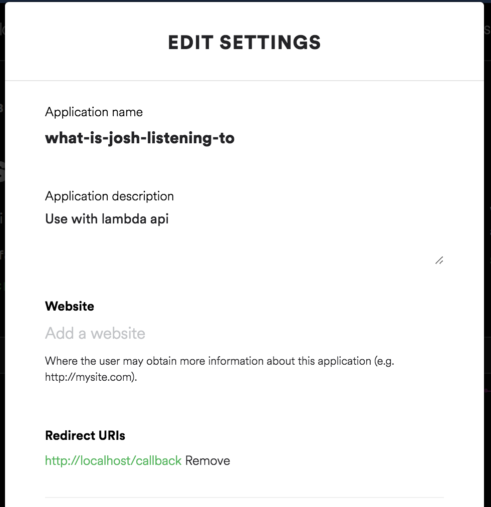
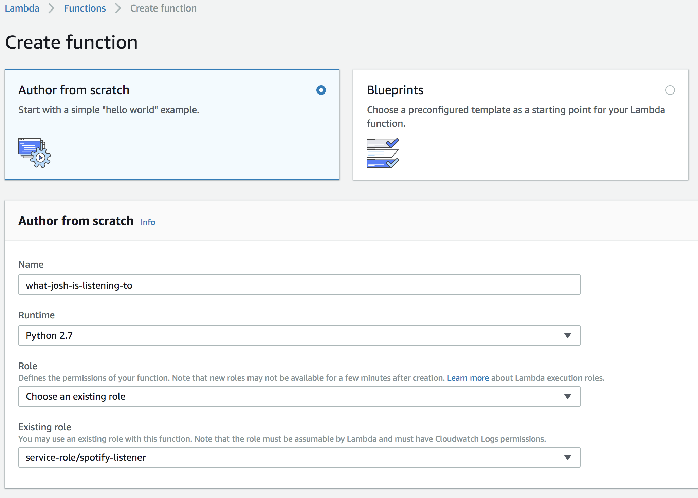

Create your own embeddable Spotify "Now Playing" with AWS Lambda
I love Spotify, and I love discovering new music based on my friend’s music feed. More words more words more words more words more words more words more words more words.
#TODO: image of it working on my website.
You can see the endpoint working at https://lambda.joshspicer.com/v1/current
Overview
In this guide we will be hosting a function on AWS Lambda, and using Spotify’s web API to return a JSON object with the user’s current or last played Spotify track. We will utilize Amazon’s API Gateway to create a REST endpoint that can be used anywhere (I use it on my personal website). I wrote the lambda function in python, but this should be easily adaptable to work with any language.
Prereqs
- AWS Account (Free Tier is all we’ll need)
- Spotify account (premium?)
- Optional: Domain to point API at
Create Developer Account
The first step is to visit the Spotify developer dashboard and create a new project. This process will grant you a Client ID and Client Secret. You’ll need to base64 encode these two values with a colon separating them.
Encoding the token can be done by this simple shell command.
echo -n <clientId>:<clientSecret> | base64
You’ll also need to add a callback URI. For this tutorial it doesn’t matter what the URI is,
as long as you set one and it’s consistent in all the following steps. I used http://localhost/callback.

Generate Refresh Token
Spotify’s API requires direct user authorization to access information like current track. User resources can only be requested by that user, so this means we need to be logged in as ourselves in order to get the information we need. The problem with this is that Spotify authorization tokens only last 60 minutes, so we would typically need to log in hourly in order to keep this running. By requesting a refresh token and writing some code, we can continually grant ourselves a new access token without any user interaction.
#TODO: add more info about the authorization flows.
You’ll need a refresh token to kick it off, which you can generate by asking Spotify for it.
Make sure to provide the correct scopes user-read-currently-playing, user-read-playback-state, user-read-recently-played, etc as needed.
Visit this URL with your information filled in. This is where Spotify will ask you to login. After successfully authenticating, you’ll see an access code in the URL. Save that for the next step.
https://accounts.spotify.com/authorize?client_id=<YOUR CLIENT ID>&redirect_uri=<YOUR REDIRECT URI>&response_type=code&scope=<YOUR SCOPES>
Issue this curl command in your shell with the access code you just generated.
curl -H "Authorization: Basic <YOUR BASE-64'd APP TOKEN>" -d grant_type=authorization_code -d code=<YOUR ACCESS CODE> -d redirect_uri=<YOUR CALLBACK URL>
https://accounts.spotify.com/api/token
You should now have a refresh token, which you call upon to refresh your access token as necessary (more on this later).
Start a new Lambda Project
Lambda, for those unfamiliar, is a compute platform that allows you to run code in the cloud without the hassle of configuring an entire server instance. Code can be running by hitting a REST endpoint.
Navigate to the AWS Lambda page and create a new function. I’ll be making my function in region us-east-2.
Create a role that permits basic Amazon Lambda execution, as well as Dynamo DB access (you’ll need that later). I named my role spotify-listener.

…….
……
……..
…..
# Only called if the current accessToken is expired (on first visit after ~1hr)
def refreshTheToken(refreshToken):
clientIdClientSecret = 'Basic <YOUR BASE-64'd APP TOKEN>'
data = {'grant_type': 'refresh_token', 'refresh_token': <YOUR REFRESH TOKEN>}
headers = {'Authorization': clientIdClientSecret}
p = requests.post('https://accounts.spotify.com/api/token', data=data, headers=headers)
spotifyToken = p.json()
# Place the expiration time (current time + almost an hour), and access token into the DB
table.put_item(Item={'spotify': 'prod', 'expiresAt': int(time.time()) + 3200,
'accessToken': spotifyToken['access_token']})
…..
…..
Steps
- Create Developer app
- Get REFRESH token (put curl command, with correct scopes!)…. /authorize, then me/…
- https://developer.spotify.com/documentation/general/guides/authorization-guide/
- Start Lambda Project python
- Download dependencies with pip, copy into online IDE (requests)
- DynamoDB setup (store accessToken and timeSince to not keep querying spotify).
- API Gateway (set up Path)
- Optional: Set up your own DNS.
- CODE: my python code that parses the javascript. <—make return value more user-friendly.
- Base64-encode the client ID and client secret?
- CODE: Client-side Javascript catcher (Copy/paste-able)
- How to embed.
#TODO: Attach entire gist of python code.
- TODO: Queue song to my playlist from web interface
- TODO: Album art as header of website.
Questions?
let me know!